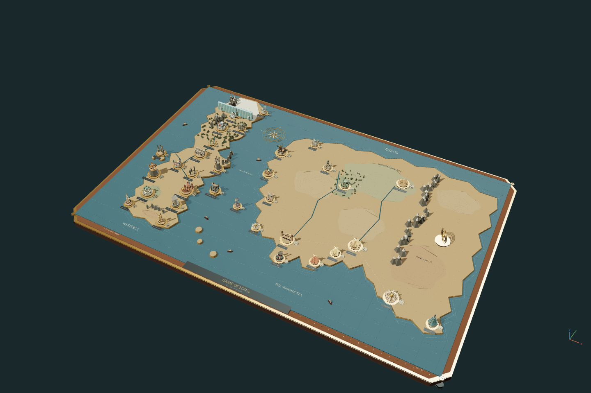

Open model ↗Antoni GaudíSagrada FamíliaStone, branches and coloured light.01v2 · 15 Oct 202614 saved views · 2 optionsSave model ↓
Open model ↗Antoni GaudíLa PedreraCourtyards and sculpted rooftops.02v3 · 16 Oct 20267 saved viewsSave model ↓
Open model ↗After AKIRANeo-TokyoAfter midnight. Kaneda’s machine, rebuilt from the mechanical sheets.03v7 · 15 Oct 20269 saved viewsSave model ↓
Explore the joints ↗Studies in Japanese craftWood, joinedHidden cuts, ordered assembly. Twelve joinery studies with reversible animation and a slider to reveal the interlocks.04v1 · 19 Oct 2026Inspect assembled modelSave model ↓
Open model ↗Al Khobar / Canopy studiesAl-Talaqi SquareFitted crowns, braces, rims and roof joints across all five canopy options, with recessed bases and curved gardens. Site location is approximate (26.311 N, 50.203 E).05v8 · 18 Oct 20264 saved views · 5 optionsSave model ↓
Open model ↗PopulousThe SphereA luminous globe. Six screen programmes.06v3 · 16 Oct 20263 saved views · 6 optionsSave model ↓
Open model ↗Skidmore, Owings & MerrillBurj KhalifaFrom the fountain to the crown.07v1 · 15 Oct 20260 saved viewsSave model ↓
Open model ↗Gustave Eiffel’s companyEiffel TowerLattice, arches and seven design options.08v2 · 15 Oct 20267 saved views · 7 optionsSave model ↓
Open model ↗BanksyThe gallerySeven works in a quiet limestone courtyard.09v2 · 16 Oct 20267 saved viewsSave model ↓
Open model ↗After M. C. EscherEscher playgroundImpossible perspectives and scripts to explore.10v2 · 15 Oct 20265 saved viewsSave model ↓
Open model ↗After René MagritteThe ordinary, unsettledA false window. A floating castle. An impossible apple.11v1 · 15 Oct 20264 saved viewsSave model ↓
Open model ↗After Salvador DalíSoft timeThe elephant, soft watches and egg studio, together.12v3 · 16 Oct 20264 saved viewsSave model ↓
Open model ↗Pier Luigi NerviPalazzo dell’Acqua e della LuceA continuous rising gallery and a fountain of light.13v3 · 16 Oct 20267 saved viewsSave model ↓
Open model ↗Zdeněk ŘihákHotel PanoramaThe mountain hotel, with its 1970 design option.14v3 · 16 Oct 20266 saved views · 2 optionsSave model ↓
Open model ↗Painter & OrrockBanff Springs HotelStone towers, steep roofs and the Bow Valley.15v3 · 16 Oct 20266 saved viewsSave model ↓
Open model ↗Frank GehryGuggenheim BilbaoTitanium sails beside the Nervión.16v5 · 16 Oct 20268 saved viewsSave model ↓
Open model ↗Augustus PuginBig Ben / Elizabeth TowerElizabeth Tower and its restored blue clock faces.17v3 · 16 Oct 20262 saved viewsSave model ↓
Open model ↗Richard Rogers PartnershipThe O2 / Millennium DomeTwelve yellow masts and a suspended white canopy.18v2 · 15 Oct 20263 saved viewsSave model ↓
Open model ↗Marks Barfield ArchitectsLondon EyeThe wheel, its single-sided support and 32 capsules.19v2 · 16 Oct 20262 saved viewsSave model ↓
Open model ↗Horace Jones & John Wolfe BarryTower BridgeStone towers, suspension chains and opening bascules.20v3 · 16 Oct 20262 saved viewsSave model ↓
Open model ↗Sir Giles Gilbert ScottBattersea Power StationBrick, fluted chimneys and monumental turbine halls.21v2 · 16 Oct 20263 saved viewsSave model ↓
Open model ↗Charles Barry & A. W. N. PuginHouses of ParliamentCourtyards, chambers and towers beside the Thames.22v5 · 16 Oct 20263 saved viewsSave model ↓
Open model ↗Shreve, Lamb & HarmonEmpire State BuildingLimestone setbacks and an Art Deco crown.23v2 · 16 Oct 20263 saved viewsSave model ↓
Open model ↗A clockwork parody / Mechanical atlasGame of LOINsInformation is coming. Thirty-three clockwork realms, carved terrain and a cinematic journey from the Wall to Asshai.24v2 · 17 Oct 202634 saved viewsSave model ↓